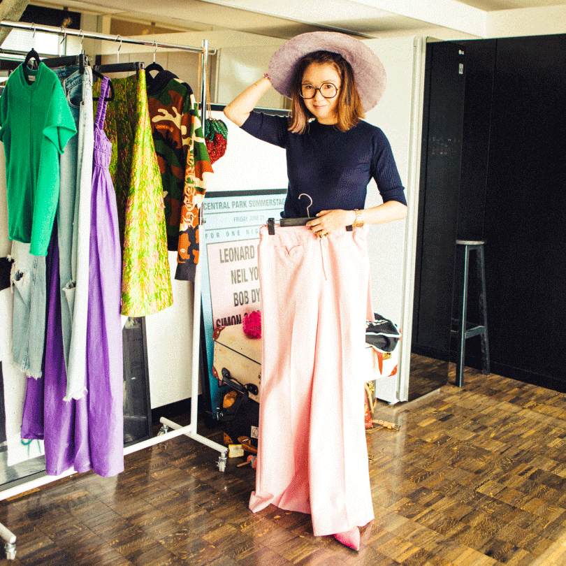
2022.06.24
雑誌、広告、セレブリティから引っ張りだこの人気スタイリスト安西こずえさんも、LG Stylerの愛用者。その活用法を聞いてみたところ、旅のワードローブのケアに重宝しているのだとか。そこで今回は「3泊5日ハワイ旅行」をテーマに安西さんの旅のワードローブをご紹介。LG Stylerの活用の仕方とともにお話しを伺いました。
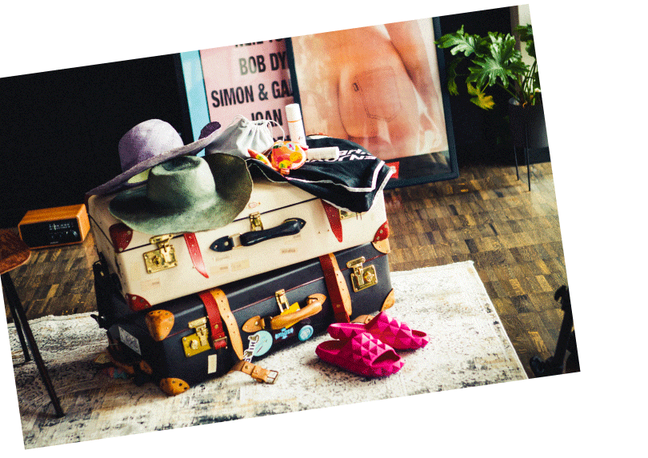
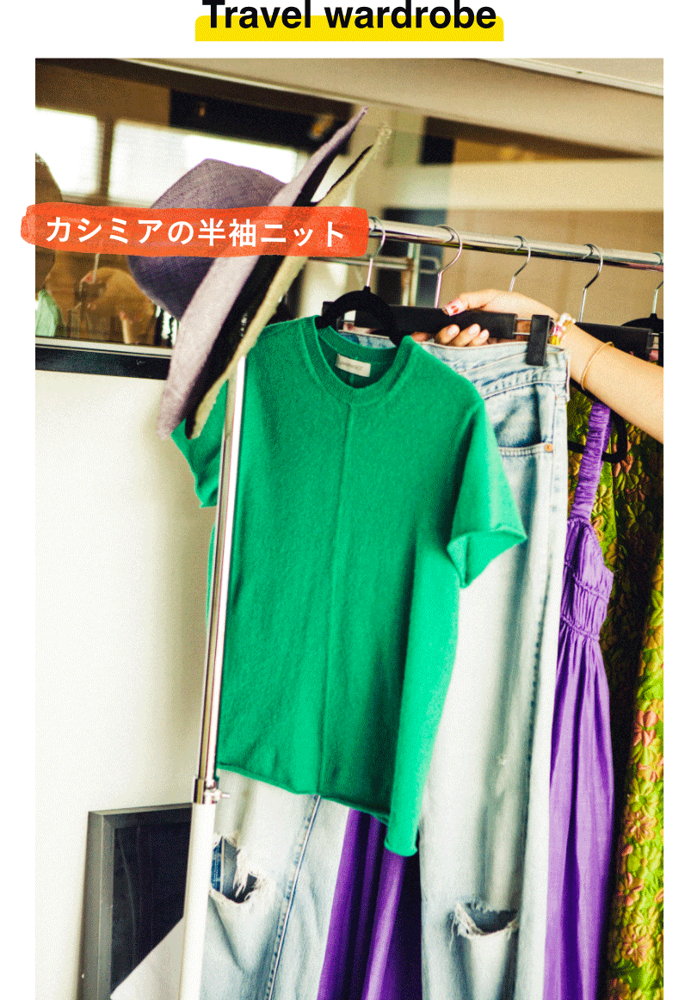
「私は一年中カシミヤを着るくらい、カシミヤが大好き。温暖なハワイにも持っていきます。ハワイって意外と夜は冷えたり、建物の中は寒かったりするので、こういうアイテムがすごく重宝するんですよね。特に女性は冷えが厳禁です。旅から帰ってくると流石に風合いが落ちていたり、ちょっと型崩れしていたりするんですが、そうなったらLG Styler行き。スチーム効果でカシミアの風合いが復活するし、ほんのり衣類に残るハワイっぽい匂いも全然気にならなくなります。こういう繊細なお洋服って、あまり頻繁にクリーニングには出したくないですから」
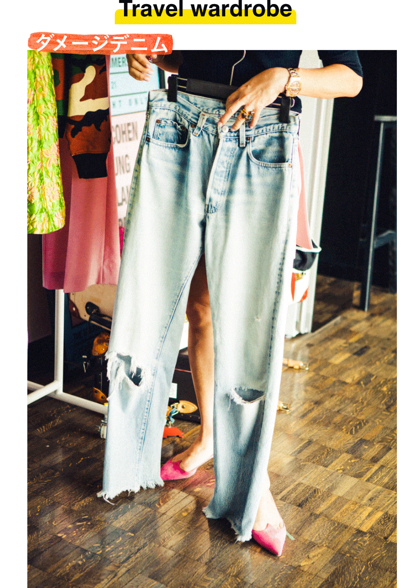
「ハワイというロケーションで、ボロボロのデニムにビーサンってなんか可愛くないですか（笑）。私はシーンも込みのこのスタイリングがすごく好きなので、デニムは必ず持っていきます。気負わずラフにはけるし現地で何かと重宝するんです。それでデニムって、帰ってきたらもう盛大に折りジワはついているしちょっとクタッとしているし、かわいそうな状況になるんだけど、ダメージが激しいのとこれ以上色落ちもしてほしくないから洗濯機にも入れたくない。ということでこれもすぐにLG Styler。デニムとLG Stylerって本当に相性いいですよね」
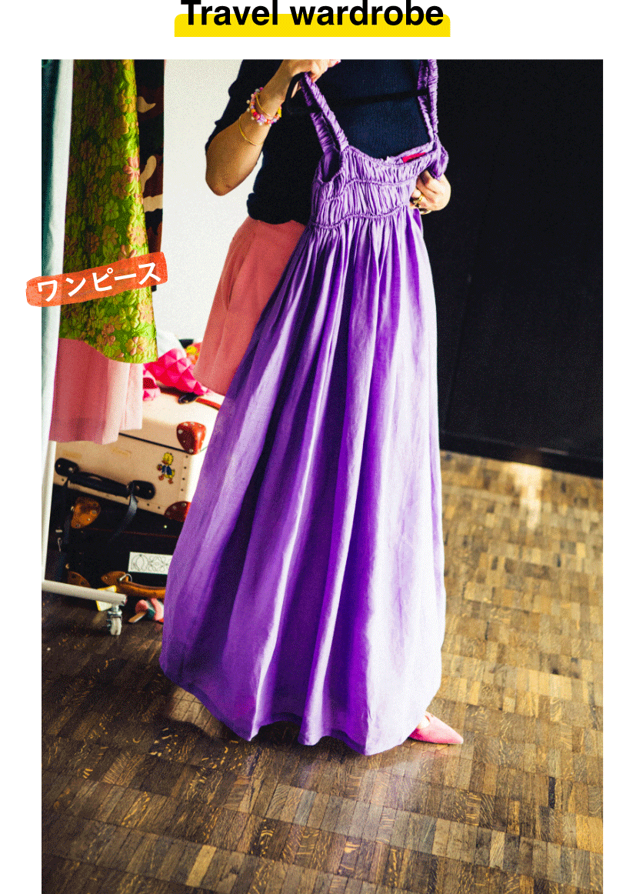
「ハワイといえば、ワンピースは必須。楽だし、気持ちいいし、可愛いし。リゾート気分を味わうにはもってこいですしね。これは結構ボリュームのあるデザインなんですが、トランクケースに入れるとやっぱりぺちゃんこになってしまうんですよね。そのせいでシワも強く入ってしまうし…。それとこういうアイテムって自分が思っている以上に汗を吸ってしまっていると思うんです。LG Stylerは除菌の効果もあるから、シワとか風合いだけじゃなく、衛生面でもちょっと安心感があるので、助かっています」
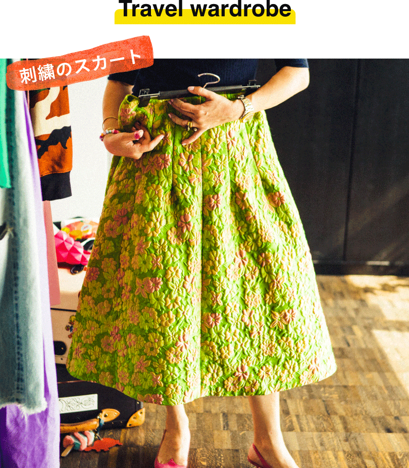
「夜は素敵なレストランにも行きたいですから、ちょっとエレガントなスカートも必要。私はボリュームのあるスカートが大好きなので、こういったものを結構持っていきます。ただこれもさっきのワンピースと一緒で、トランクから出すとペタッとしてしまっていることが多い。ふっくらとしたボリューム感を復活させたくて、LG Stylerに入れます。これは刺繍で花柄をデザインしたものなのですが、こういう繊細なものはできるだけクリーニングは出したくないですよね。綺麗になるのはいいんですが、どうしても風合いが変わってしまうので。できるだけ自分で丁寧にケアしてあげたいアイテムです」
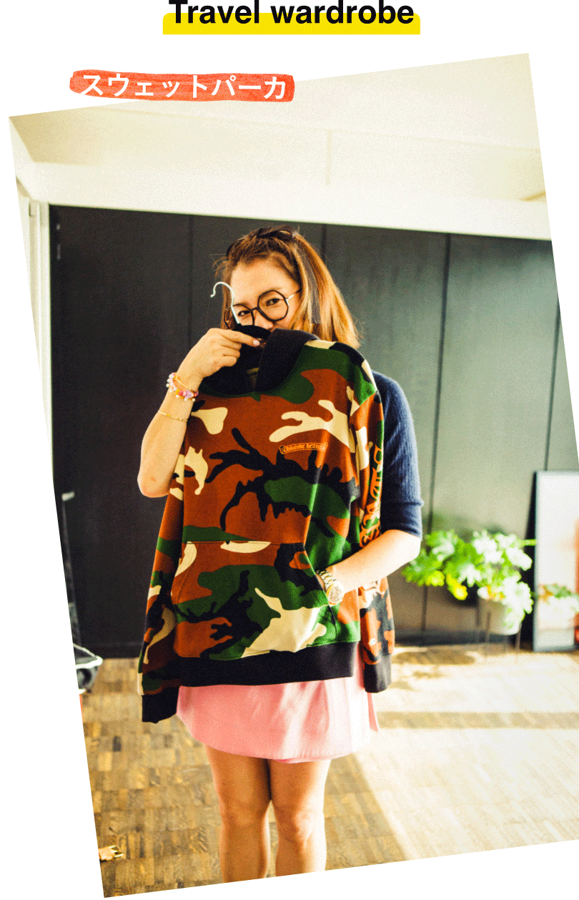
「女の子はハワイだとついワンピースとかの涼しい服に頼りがちですが、私はハワイでもいろいろオシャレを楽しみたいので、こういうちょっとメンズっぽいアイテムも必ず持っていきます。普通に着てもいいし、肩にかけてストールがわりにしてもいいし、クーラーがしっかり聞いているお店やホテルなんかではこれがすごく便利なんですよ。で、実は私、できるだけコットンスウェットは洗いたくない派。風合いが損なわれて行くのがすごく嫌なんです。クリーニングなんてもってのほか。ペチャっとして帰ってきてしまいますから。だからLG Stylerが本当に助かります。これが来る前は正直、汚いまま着ているような状態に近かったですから（笑）」
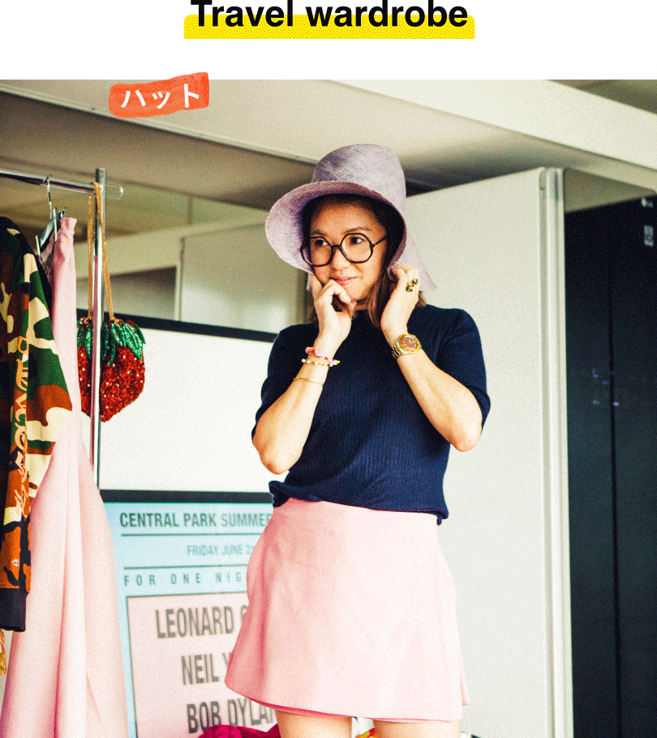
「もちろん小物もいろいろ持っていくんですけども、中でも大事なのはやっぱり帽子。日差し強いですから、ハワイは。帽子って一っけんわかりずらいけど、汗もしっかり吸っちゃうし実は結構汚れていると思うんですよね。だからこれも、帰ってきたら欠かさずLG Styler。ちょっとした形崩れも元に戻る感じがします」
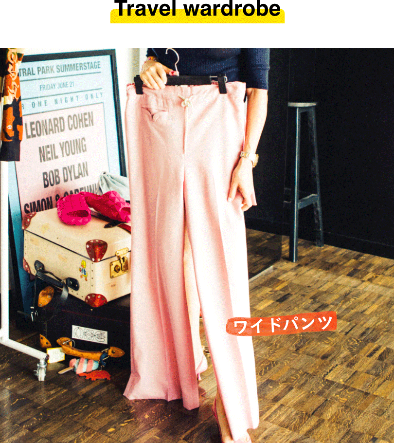
「デニムみたいなカジュアルなパンツの他に、センタークリースの入ったパンツも持っていきます。崩れてしまいがちなセンタークリースもLG Stylerでケアできるから、その辺も重宝していますね」
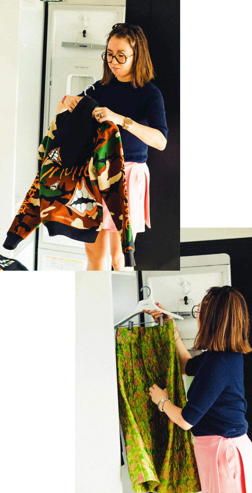
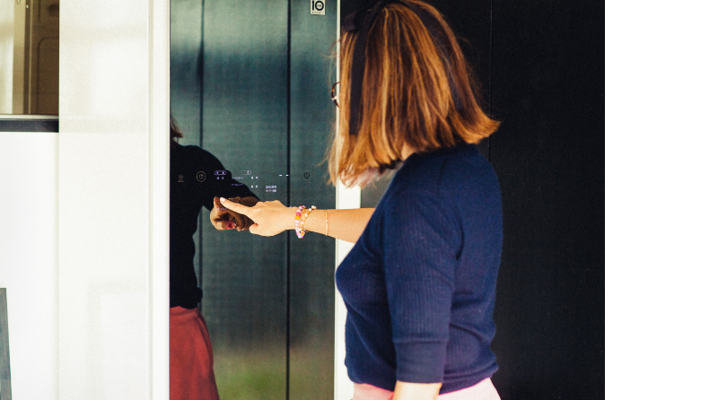
「以上、７点の紹介でしたが、実は私、もっともっとたくさんのお洋服を持っていきます。3泊5日のハワイ旅行なら、トランクケース2つ分は持って行くかも（笑）。一回も着ない服もかなりあります。でもやっぱり気分に合わせて服を楽しむことが好きなので、持っていっちゃうんですよね。 ハワイは本当に湿気も少なくていいところですが、やっぱり暑くて汗もいっぱいかく。お洋服が結構傷んでいたりするので、LG Stylerは重宝しています」
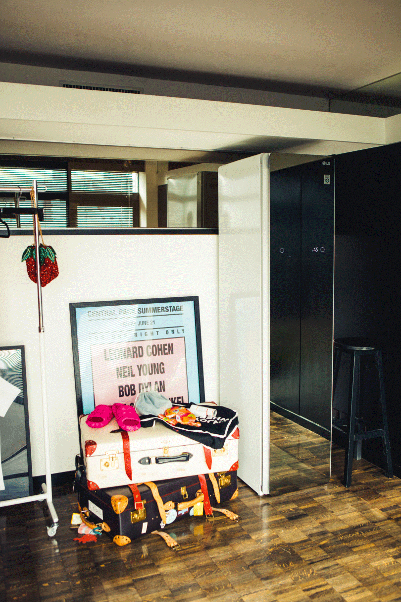

雑誌や広告、ブランドから引っ張りだこのスタイリスト。自信が手がけるファッションブランド「mikomori」も人気。日々のスタイリングやライブをアップするインスタグラムも注目。
Interview CATAL DESIGN